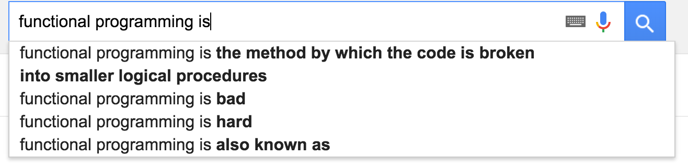
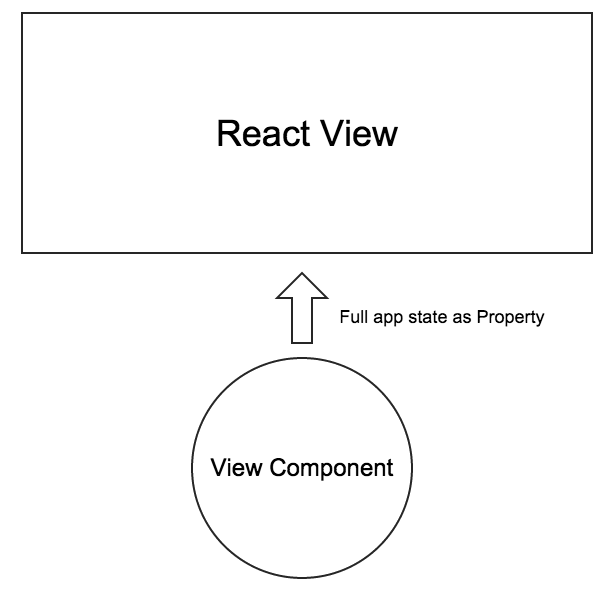

Functional Reactive Programming with Bacon.js
Hubchat Tech & Beer 21.4.2016
Olli Mahlamäki / Hubchat
Agenda
- Quick introduction
- Workshop
- 5 exercises
- Concrete API tips inbetween
Functional Programming
Important parts
- Pure functions
- Avoid state
- Immutable data
- Higher order functions
FP
var messages = [
{ from: "olli", to: "pekka", text: "Hi Pekka" },
{ from: "pekka", to: "olli", text: "What's up?" },
{ from: "olli", to: "pekka", text: "Doing a tech an beer!" },
{ from: "pekka", to: "olli", text: "Ok cool" },
]
messages
.filter(function(message) { return isDirectedToMe(message) })
.map(function(message) { return message.text })
.forEach(show)
FRP (with bacon)
var messages = [
{ from: "olli", to: "pekka", text: "Hi Pekka" },
{ from: "pekka", to: "olli", text: "What's up?" },
{ from: "olli", to: "pekka", text: "Doing a tech an beer!" },
{ from: "pekka", to: "olli", text: "Ok cool" },
]
// Simulate messages coming from server
var messagesE = Bacon.sequentially(1000, messages)
messagesE
.filter(function(message) { return isDirectedToMe(message) })
.map(function(message) { return message.text })
.onValue(show)
Bacon.js
Javascript FRP library
- https://github.com/baconjs/bacon.js
- Made in Reaktor by Juha Paananen
Used in production
Bacon vs. Promises
- Both solve async cases
- Promise: 0-1 values
- EventStream: 0-n values
- Combo: Bacon.fromPromise(...)
Other FRP libraries
- RxJS - very similar to Bacon.js, but more popular
- Reactive extensions (C#)
- RxJava
- React ? nothing to do with FRP, but it does work great together with Bacon or RxJS
EventStream
- Stream of events with value
- From user input
- From other EventStreams
Map
var mappedStream = stream.map(f)- Creates new stream "mappedStream"
- Gets a value every time there is a value in stream
- If the value of stream is x, the value of mappedStream is f(x)
- f should be a pure function
- f can be as simple as function() { return true }
Filter
var filteredStream = stream.filter(f)- Creates new stream "filteredStream"
- Every time there is a value x in stream, f(x) gets called
- If the function f returns true, the value goes to filteredStream
- If not, the value is skipped
- f should be a pure function
Simple map filter exercise
- Use .map and .filter
- http://tinyurl.com/bacon-exercise-2
Combinators
- Take 2 (or more) streams as input, return a single stream as output
- This is the beef that makes FRP more powerful than promises
Merge
Merges events from both streams a and b into the result stream.

Result stream ends when both streams have ended.
onValue
- Add listener to the stream
- This is the place for side effects
myStream.onValue(function(value) {
// Called every time myStream gets a value
$("#result").text(value)
})
jQuery helpers
// Standard jquery
$("#myButton").on("click", handlerFunction)
// Bacon extension
var clickStream = $("#myButton").asEventStream("click")
clickStream.onValue(handlerFunction)
Bacon and jQuery
- Use .map and .merge to enable and disable textarea
- http://tinyurl.com/bacon-exercise-3b
Combine
Combines the latest values of property a and stream or property b using a given function. In this example, a self-explanatory plus function is used.

First output event is generated when both a and b have produced a value. The combined stream ends when both the inputs have ended or one has ended without having produced a value.
Calculator Exercise
- Use .combine to calculate sum and product of 2 numbers
- http://tinyurl.com/bacon-exercise-4
Bacon <3 React
Bacon vs. Flux
- You can implement flux in Bacon
- Actions -> Bacon.Bus()
- Store -> Bacon.combineTemplate() or Bacon.update()
Bacon & React demo
flatMap
Creates a new stream for each value in the source stream, using the given function f. Merges the events from all created streams into the result stream.

Result stream ends when both the source stream and all the so-far created streams have ended.
flatMapLatest
Like flatMap, flatMapLatest creates new streams for each source event. Instead of merging all created streams, it "switches" (hence the former name "switch") between them so that when a new stream is created, the earlierly created stream is no longer listened to.

Result stream ends when source stream has ended and the latest created stream has ended.
Don't worry
- When you truly understand flatMap & flatMapLatest, everything in Bacon.js becomes simple
- In the next example, you just need to know that flatMapLatest is used when doing ajax requests
Last exercise
- Use .flatMapLatest to implement clip art search
- http://tinyurl.com/bacon-react-search